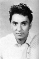
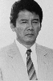

Also known as:子連れ狼 子を貸し腕貸しつかまつる (original title)
Country:Japan, 83 minutes
Spoken languages:Japanese
Genres:Drama, Action
Director(s):Kenji Misumi
Writer(s):Kazuo Koike
Video Codec:Unknown
Number: 146


Certification:
Storyline:
In this first film of the Lone Wolf and Cub series, adapted from the manga by Kazuo Koike, we are told the story of the Lone Wolf and Cub's origin. Ogami Itto, the official Shogunate executioner, has been framed for disloyalty to the Shogunate by the Yagyu clan, against whom he now is waging a one-man war, along with his infant son, Daigoro.
Cast:  


Medium: Bluray,
Comments: Part of: Lone Wolf & Cub - The Criteron Collection
Loaned: No
Aspect ratio: Unknown